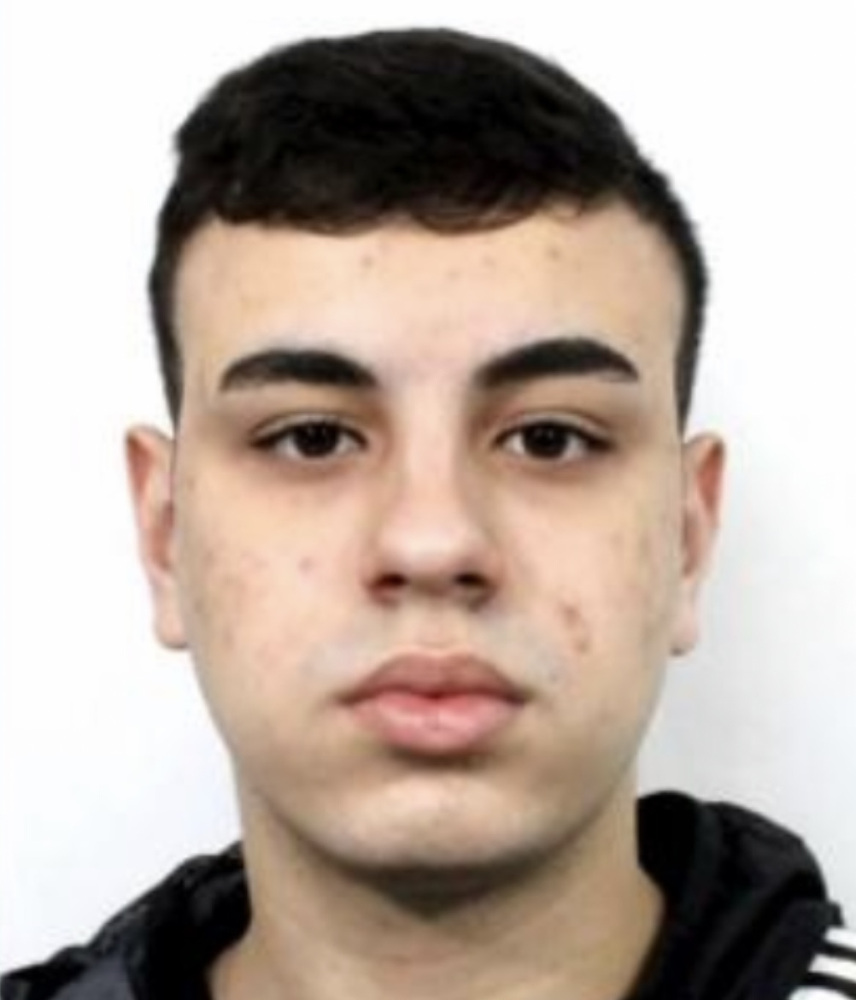

About Me
Hello, my name is Fernando Cardoso Ludvig. I'm 18 years old and I'm from Florianópolis, where I currently live. I study at EIU (SOCIESC International School) period 2019 - 2021, where I could improve my English a lot. In addition to enjoying moments with my friends and family, I have a deep appreciation for sports. I find inspiration and joy in various sports activities including football, basketball, and surfing. Playing sports not only helps me stay physically active, but also teaches me valuable lessons about teamwork, discipline, and perseverance. I am currently studying two graduations: Software Engineering at Unicesumar University in Brazil, and Web Programming at Brigham Young University in the United States. This opportunity to study at two different institutions allows me to explore different perspectives and improve my skills in software development and web programming.
As a student of Software Engineering at Unicesumar University in Brazil and Web Programming at Brigham Young University in the United States, I have developed a strong technical foundation. I strive to create user-friendly digital experiences that seamlessly integrate technology and sports, providing engaging platforms for athletes, fans, and sports enthusiasts. This intersection of creativity, technology, and sports fuels my drive to innovate and make a positive impact in the sports industry.
Alongside my academic pursuits, I actively engage in various extracurricular activities. I participate in coding courses, which not only challenge me but also provide valuable networking opportunities and exposure to cutting-edge technologies. These experiences have helped me develop strong problem-solving skills and a passion for innovation.
With a strong desire for personal growth, I am constantly expanding my knowledge beyond the boundaries of my academic studies. I am an avid reader and stay updated on the latest industry trends and advancements. Continuous learning is an essential part of my journey, allowing me to stay adaptable and thrive in a rapidly evolving field.
My main goals are to seek learning opportunities, gain practical experience, and foster a career that combines my technical expertise, creative passion, and problem-solving skills. I am dedicated to making a positive impact in the digital world through innovative solutions and meaningful collaborations.
Feel free to get in touch with me if you would like to know more information.